- Módulo: Sistemas Operativos
- Título del trabajo Registros de eventos local
- Componentes del grupo: Yolanda Maria Gonzalez Montelongo
- Curso Académico: 2013/2014
- Fecha de entrega: 19 de Junio de 2014
En esta práctica toda la actividad relevante del sistema debe registrarse en los ficheros de registro ya que esto nos permitirá tener un historial del comportamiento del sistema a modo de "caja negra" y a reconstruir situaciones anteriores del sistema para fines diversos. Para eso sirve la Monitorización y la Auditoría.
En el sistema operativo de Windows debemos activaremos las directivas de seguridad, para la auditación de los inicios de sesión al sistema. Primero, estableceremos el primer apellido como el nombre de la NETBIOS, luego reiniciaremos el equipo y crearemos los usuarios Alu1, Alu2, Alu3 y por consiguiente, abriremos la sesión de Alu1, así como con el usuario Alu2 pero escribiendo la clave mal y finalmente, no entrando en Alu3. Por último, buscaremos en el sistema la herramienta 'visor de sucesos' y comprobaremos como ha quedado el registro de todo lo anterior.
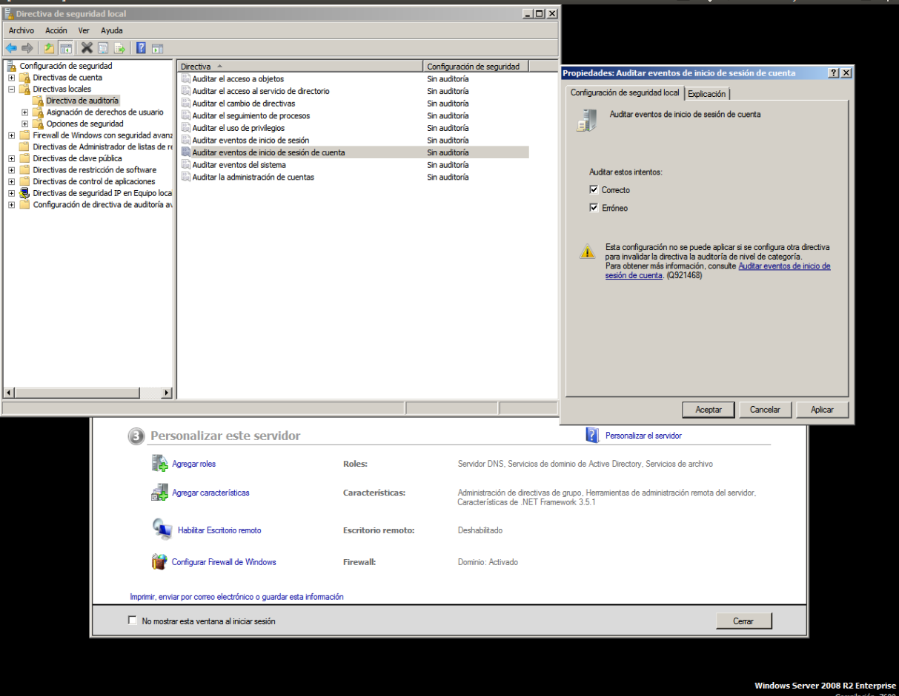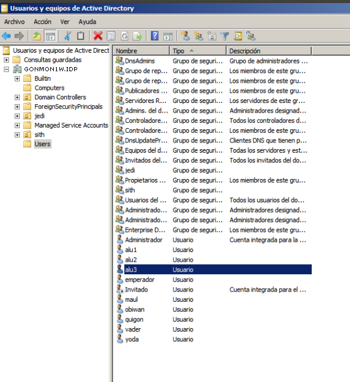Debemos cambiar el nombre del host por el primer apellido para después instalar el programa Webmin habiendo descargado el paquete .deb de la web oficial e instalarlo (dpkg --install webmin_1.690_all.deb). Para el incio del servicio Webmin, ejecutaremos /etc/init.d/webmin start y accedemos a él abriendo un navegador web y escribiendo como URL "https://localhost:10000"
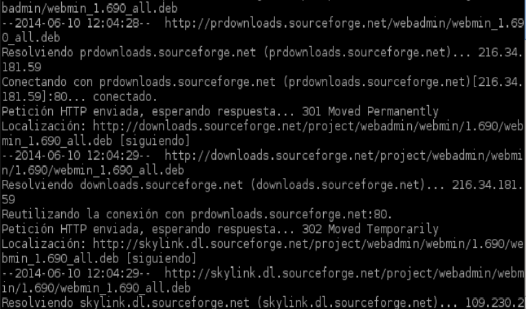 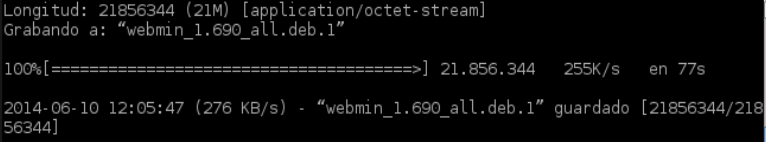 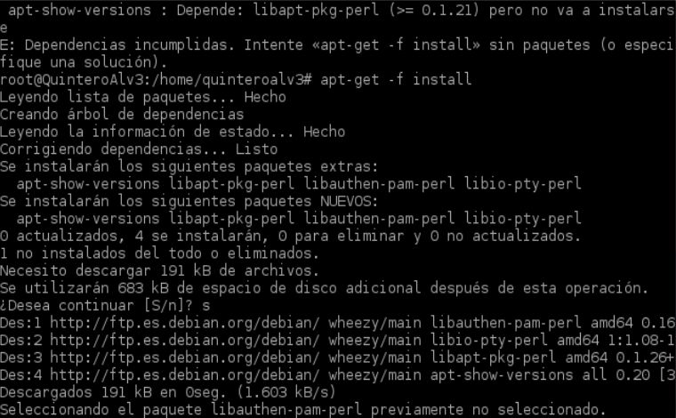 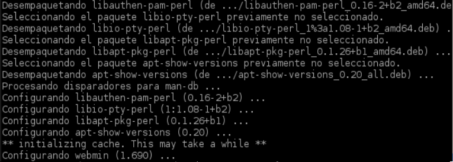 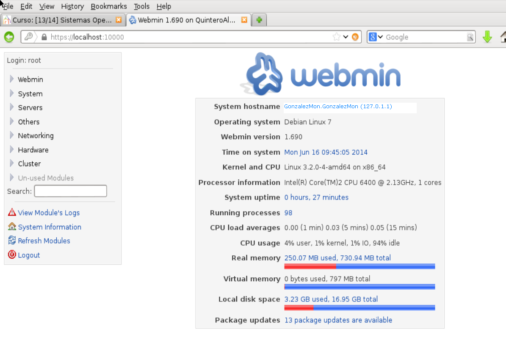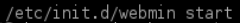
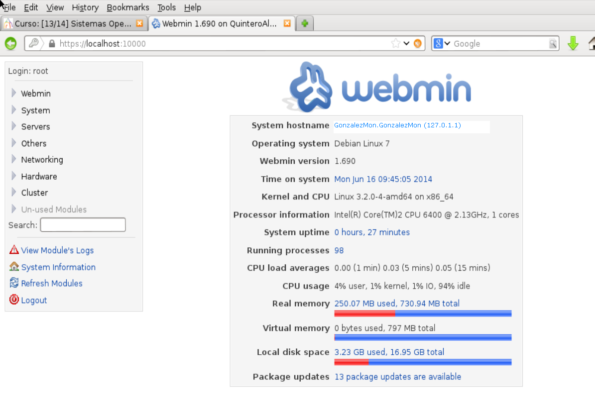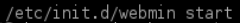
Realizaremos una monitorización local de nuestro equipo GNU/Linux
Consultaremos el fichero /etc/rsyslog.d/50-default.conf para añadir una nueva línea para configurar el registro de nuestros eventos. -> a) Como recurso.prioridad usaremos local0. -> b) Como fichero de log usaremos /var/log/nombrealumno/prueba-local.log. Añadimos la siguiente línea al fichero /etc/rsyslog.d/50-default.conf: -----> local0.* /var/log/nombredelalumno/prueba-local.log. Mediante usuario root creamos el fichero /var/log/nombredelalumno/prueba-local.log vacío y por último, recargamos el servicio rsyslog, para que guarde la configuración nueva.
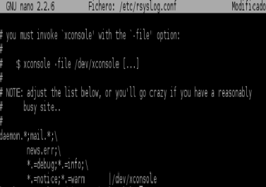Para empezar comprobamos que el fichero de log que creamos antes está vació con el comando cat /var/log/nombredelalumno/prueba-local.log. Usaremos el comando logger para generar mensajes de log en ese fichero. Para nuestros ejemplos tomamos el recurso "local0" aunque también se podrían usar local1, local2, local3, etc. Posteriormente vamos a crear varios registros utilizando de nuevo el comando logger para usar varias prioridades distintas y otros valores, y así consultar los mensajes registrados. Indicamos sobre un ejemplo lo que significa cada campo de una línea concreta del log.
Configuraremos el programa Logrotate que permitirá hacer la rotación de los ficheros de log, que se ejecutarán en /etc/logrotate.conf. Entonces, crearemos el fichero /etc/logrotate.d/nombre-del-alumno generaremos varios mensajes de log en el fichero de registro de eventos para poder usar el script, que funciona como generador de muchos mensajes de log dirigidos al nuevo fichero de registro. Usando el comando que vemos a continuación podremos aumentar el tamaño del registro de log: logger -p local0.notice -t ETC-MOTD -f /etc/motd y terminamos comprobando que su tamaño ha aumentado. Para finalizar, para que automáticamente se dispare la rotación de log, reiniciamos el equipo, pero si no queremos hacerlo, ejecutamos manualmente el programa de rotación Logrotate de este modo: /usr/sbin/logrotate -f /etc/logrotate.conf